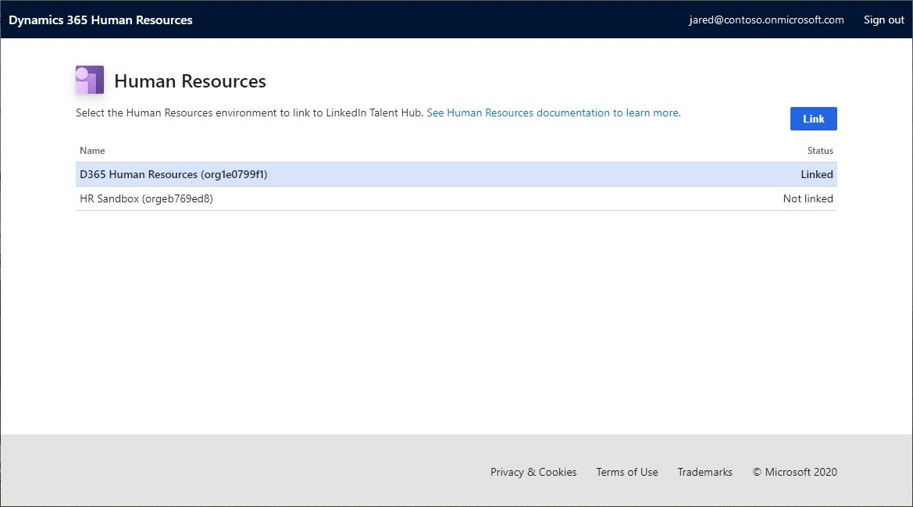
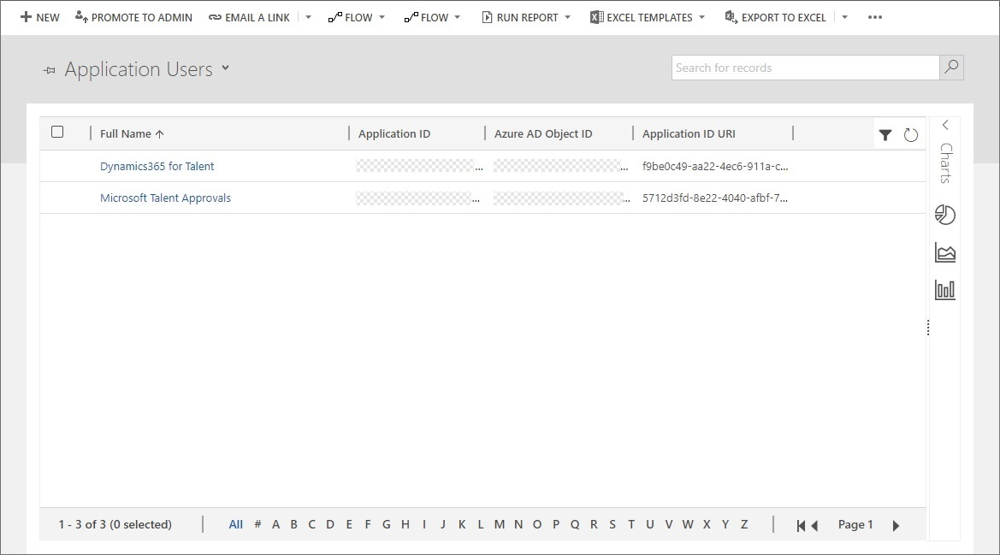
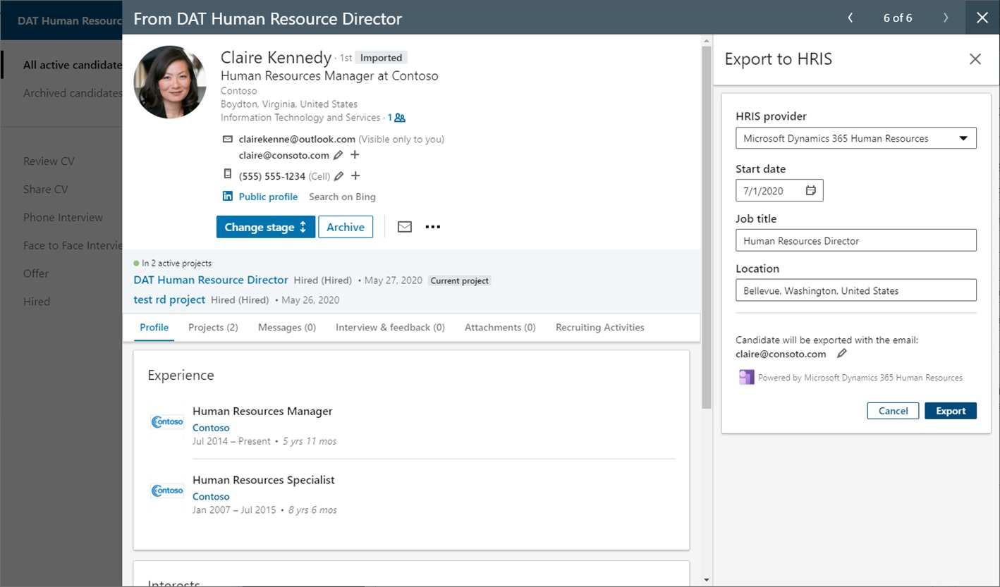

In LinkedIn Talent Hub integrieren
Important
Die Funktion ist teilweise oder komplett in jeder Sandbox‑ oder Testumgebung als öffentliche Vorschau verfügbar. In Produktionsumgebungen ist sie nicht verfügbar. Inhalt und Funktionsweise unterliegen Änderungen. Weitere Informationen zur Aktivierung der Vorschaufunktionen finden Sie unter Funktonen verwalten.
LinkedIn Talent Hub ist eine Bewerber-Nachverfolgungssystemplattform (ATS). Sie können damit Mitarbeiter an einem Ort suchen, verwalten und einstellen. Durch die Integration von Microsoft Dynamics 365 Human Resources mit LinkedIn Talent Hub können Sie auf einfache Weise Mitarbeiterdatensätze in der Personalabteilung für Bewerber erstellen, die für eine Position eingestellt wurden.
Einrichtung
Ein Systemadministrator muss Einrichtungs-Aufgaben ausführen, um die Integration mit LinkedIn Talent Hub zu ermöglichen. Erstens in der Power Apps In dieser Umgebung müssen Sie eine Benutzer- und Sicherheitsrolle einrichten, um LinkedIn Talent Hub die entsprechenden Berechtigungen zum Schreiben von Daten in die Personalabteilung zu erteilen.
Verknüpfen Sie Ihre Umgebung mit LinkedIn Talent Hub
Öffnen Sie LinkedIn Talent Hub.
Wählen Sie im Dropdown-Menü Benutzer die Option Produkteinstellungen.
Im linken Navigationsbereich im Abschnitt Erweitert wählen Sie Integrationen.
Wählen Sie Autorisieren für die Microsoft Dynamics 365 Human Resources Integration.
Auf der Seite Dynamics 365 Human Resources wählen Sie die Umgebung aus, mit der LinkedIn Talent Hub verknüpft werden soll, und wählen Sie dann Verknüpfung.

Note
Sie können nur Links zu Umgebungen erstellen, in denen Ihr Benutzerkonto Administratorzugriff sowohl auf die Personalumgebung als auch auf die zugehörige Power Apps Umgebung hat. Wenn auf der Linkseite Personal keine Umgebungen aufgeführt sind, stellen Sie sicher, dass Sie für den Mandanten Personalumgebungen lizenziert haben und dass der Benutzer, den Sie auf der Linkseite angemeldet haben, über Administratorrechte sowohl für die Personalumgebung als auch für die Power Apps Umgebung verfügt.
Eine Power Apps Sicherheitsrolle erstellen
Öffnen Sie das Power Platform Admin Center.
In der Umgebungen-Liste wählen Sie die Umgebung aus, die der Personalumgebung zugeordnet ist, mit der Sie Ihre Instanz von LinkedIn Talent Hub verknüpfen möchten.
Wählen Sie Einstellungen.
Erweitern Sie die Benutzer + Berechtigungen Knoten und wählen Sie Sicherheitsrollen.
Auf der Sicherheitsrollen Seite in der Symbolleiste wählen Sie Neue Rolle.
Auf der Registerkarte Einzelheiten geben Sie auf der Registerkarte einen Namen für die Rolle ein, z.B. LinkedIn Talent Hub HRIS-Integration.
Auf der Registerkarte Anpassung wählen Sie auf der Registerkarte Organisationsebene Lesen-Berechtigung für die folgenden Entitäten aus:
- Entität
- Feld
- Beziehung
Speichern und schließen Sie die Sicherheitsrolle.
Erstellen Sie einen Power Apps Anwendungsbenutzer
Für den LinkedIn Talent Hub-Adapter muss ein Anwendungsbenutzer erstellt werden, der dem Adapter die Berechtigung zum Schreiben von Kandidatendatensätzen in der Power Apps Umgebung erteilt.
Öffnen Sie das Power Platform Admin Center.
In der Umgebungen-Liste wählen Sie die Umgebung aus, die der Personalumgebung zugeordnet ist, mit der Sie Ihre Instanz von LinkedIn Talent Hub verknüpfen möchten.
Wählen Sie Einstellungen.
Erweitern Sie die Benutzer + Berechtigungen Knoten und wählen Sie Benutzer.
Wählen Sie Verwalten von Benutzern in Dynamics 365.
Verwenden Sie das Dropdown-Menü über der Liste, um die Ansicht von der Standardansicht Aktivierte Benutzer auf Anwendungsbenutzer zu ändern.

Wählen Sie auf der Symbolleiste auf Neu.
Gehen Sie auf der Seite neuer Benutzer folgendermaßen vor:
- Ändern Sie den Wert des Benutzertyp-Felds auf Anwendungsbenutzer.
- Stellen Sie das Feld Benutzername auf Dynamics365 HR LinkedIn HRIS-Integration.
- Legen Sie das Feld Anwendungs-ID auf 3a225c96-d62a-44ce-b3ec-bd4e8e9befef fest.
- Geben Sie einen beliebigen Wert in die Felder Vorname, Nachname, und Erste E-Mail ein.
- Wählen Sie auf der Symbolleiste Speichern & Schließen aus.
Zuweisen einer Sicherheitsrolle zu einem neuen Benutzer
Nachdem Sie den neuen Anwendungsbenutzer im vorherigen Abschnitt gespeichert und geschlossen haben, kehren Sie zur Seite Benutzerliste zurück.
Auf der Seite Benutzerliste ändern Sie die Ansicht in Anwendungsbenutzer.
Wählen Sie Anwendungsbenutzer aus, den Sie im vorherigen Abschnitt erstellt haben.
Wählen Sie in der Symbolleiste Rollen verwalten aus.
Wählen Sie die Sicherheitsrolle aus, die Sie zuvor für die Integration erstellt haben.
Wählen Sie OK.
Eine Azure Active Directory App in Human Resources hinzufügen
In Dynamics 365 Human Resources öffnen Sie die Azure Active Directory Anwendungen Seite.
Fügen Sie einen neuen Datensatz der Liste hinzu und wählen Sie die folgenden Felder:
- Kundenkennung: Geben Sie 3a225c96-d62a-44ce-b3ec-bd4e8e9befef ein.
- Name: Geben Sie den Namen der Power Apps Sicherheitsrolle ein, die Sie zuvor erstellt haben, z.B. LinkedIn Talent Hub HRIS-Integration.
- Benutzer-ID: Wählen Sie einen Benutzer aus, der zum Schreiben von Daten in der Personalverwaltung berechtigt ist.
Erstellen Sie die Entität in Common Data Service
Important
Die Integration mit LinkedIn Talent Hub hängt von virtuellen Entitäten ab in Common Data Service für Human Resources. Als Voraussetzung für diesen Schritt bei der Einrichtung müssen Sie virtuelle Entitäten konfigurieren. Informationen zum Konfigurieren virtueller Entitäten finden Sie unter Konfigurieren von Common Data Service virtuellen Entitäten.
Öffnen Sie in der Personalabteilung die Seite Common Data Service (CDS) Integartion.
Wählen Sie die Registerkarte Virtuelle Entitäten.
Filtern Sie die Entitätsliste nach der zu findenden Entitätsbezeichnung LinkedIn exportierter Kandidat.
Wählen Sie die juristische Person und dann Erstellen/Aktualisieren.
Kandidatendatensätze exportieren
Nach Abschluss der Einrichtung können Personalvermittler und Personalfachleute (HR) die Funktion Export nach HRIS in LinkedIn Talent Hub nutzen, um eingestellte Kandidatendatensätze von LinkedIn Talent Hub in die Personalabteilung zu exportieren.
Exportieren Sie Datensätze von LinkedIn Talent Hub
Nachdem ein Kandidat den Rekrutierungsprozess durchlaufen hat und eingestellt wurde, können Sie den Kandidatendatensatz von LinkedIn Talent Hub in die Personalabteilung exportieren.
Öffnen Sie in LinkedIn Talent Hub das Projekt, für das Sie den neuen Mitarbeiter eingestellt haben.
Wählen Sie einen Kandidaten-Datensatz aus.
Wählen Sie Status ändern und dann Eingestellt.
Im Auslassungsmenü (...) für den Kandidaten wählen Sie Export nach HRIS.
In dem Bereich Export nach HRIS geben Sie die Informationen ein, die exportiert werden müssen:
- In dem Feld HRIS-Anbieter wählen Sie Microsoft Dynamics 365 Human Resources.
- Wählen Sie im Feld Startdatum ein Startdatum für den Mitarbeiter aus.
- In dem Feld Berufsbezeichnung geben Sie eine Berufsbezeichnung für den Job des neuen Mitarbeiters ein.
- In dem Feld Standort geben Sie im Feld den Standort ein, an dem sich der Mitarbeiter befindet.
- Geben Sie die E-Mail-Adresse des Mitarbeiters ein oder überprüfen Sie sie.

Komplettes Onboarding in der Personalabteilung
Kandidatendatensätze, die von LinkedIn Talent Hub in Human Resources exportiert werden, werden im Bereich Kadidaten zum Einstellen auf der Seite Personalverwaltung angezeigt.
Öffnen Sie in Human Resources die Siete Personalverwaltung.
In dem Abschnitt Kandidaten zum Einstellen wählen Sie Einstellen für den ausgewählten Kandidaten.
In dem Dialogfeld Stellen Sie einen neuen Mitarbeiter ein überprüfen Sie den Datensatz und fügen Sie alle erforderlichen Informationen hinzu. Sie können auch die Positionsnummer auswählen, für die der Kandidat eingestellt wurde.
Nachdem Sie die erforderlichen Informationen eingegeben haben, können Sie mit Ihren Standardprozessen zum Erstellen von Mitarbeiterdatensätzen und zum Einbinden von Mitarbeitern fortfahren.
Die folgenden Details werden importiert und in den neuen Mitarbeiterdatensatz aufgenommen:
- Vorname
- Nachname
- Datum des Beschäftigungsbeginns
- E-Mail-Adresse
- Telefonnummer
Siehe auch
Konfigurieren von Common Data Service virtuellen Entitäten
Was ist Common Data Service?